(2007-04-04 15:31:30)
06年在中国证券市场竟然可以亏损累累，最后被迫转战香港，这种奇人绝对是06年市场的最大奇迹，前几天，本ID有幸听闻此人后，真有一睹为快的冲动。当被告知此人为一50岁的北京老男人后，才打消此念头。细想，这其实也不奇怪，一个极端心态有问题的人，确实是不难创造06年全年严重亏损奇迹的。例如，一洗盘就砍仓，开涨的时候不敢买，一买就买个顶，然后又砍，这样来回几次，不严重亏损就怪了。
最奇的是，此人到香港后竟然能挣点钱了，他的招数就是，一旦看到国内拉某股票，就去买香港相应的股票，然后T+0出来，绝对不敢过夜，这市场还有这样的妙人，也算有趣。
曾反复说过，心态的磨练对于市场操作的重要性，但这事情要分开看。有些人，心态就是这样的，改无可改，天性如此，到了关键时刻就是顶不住，例如，明明脑子里知道不能买了，但手就是发痒，像毒瘾发作一般，不受控制。现在的买卖操作又特简单，以前最早时，无论机构大户，都有报单、红马甲之类的东西，现在随便一个散户，在网上1秒种就可以完成买卖，只要扛不住那1秒，什么技术、理论都白搭。
这时候怎么办？最好的办法，当然是去“戒毒”，这必须从最基础的心理训练开始，但这不是任何人都有条件办到的。
还有，就是远离股市，股市只是生活的一部分，一个没有股市的生活依然是生活，活着就好。
还有，就是换一个环境，例如像上面那奇人那样，到了香港，找到一个偏方，病虽好不了，也至少不那么难受了。
从某种意义上说，操作并不一定能磨练心态的，这事就如同治疗某种男性隐疾一样，根子上病了，那是很难有好办法的。最好的办法，就是退出，至少不会被江湖郎中反复欺骗而花冤枉钱。
当然对于是否适合市场，也只有当下的意义，并不是说真是永远没救了，但有些特别严重的，确实不适宜留在市场中治疗的，必须先远离市场一段时间，彻底洗心革面，才有可能改善。
这里不妨给出几种不适合在市场上：
一、耳朵控制大脑型。
这种人，一旦听到什么，就可以完全不经过大脑，立即由耳朵就直接操纵手，如果你每一次的买卖几乎都是这样完成的，那么，你根本不适合在市场上。【韶山映山红】消息控。没有独立自主的操作系统。条件反射型木偶。】
二、疯狂购物型。
这种人，最大的特点就是可能只有几万元的资金，竟然可以拥有十几甚至几十只股票，什么股票都想拥有，什么股票涨了，都说我也有，以此来安慰自己，这种人，根本不适合在市场上。【韶山映山红】买买买。篮子太多，鸡蛋不够用。】
三、不受控制型。
每次操作，明明知道不对，就是控制不住自己，心里有一股顽劲，一到需要抉择的关键时刻，永远掉链子，这种人，根本不适合在市场上。【韶山映山红】有独立自主的操作系统。自制能力低，或者心理素质差。】
四、永远认错型。
典型的永远认错，死不改错，同样的毛病，可以永远犯下去却永远改不了。而在市场中，一个毛病就足以致命，一个死不改错的人，是不适合市场的。【韶山映山红】有独立自主的操作系统，但是有破损。】
五、祥林嫂型：
这种人，永远就是哀声叹气，甚至会演变成特别享受这种悲剧情调，市场中不是受罪来的，何必这么折腾，市场外的天空广阔着，离开吧。【韶山映山红】心智模式有问题。】
六、赌徒型：
对于他来说，市场就是赌场，这种人根本没必要在市场里，不说远的，现在澳门新来不少赌场，珠海的某个岛建桥连过去，该岛将建成大型度假地，白天过桥就可以赌，晚上回来睡觉，参与该建设的、其背景是美国某大型集团的人，在国内刚收购某大型旅游企业，以后是一条龙服务，很方便的。【韶山映山红】认知偏差。】
七、股评型。
市场中喜欢吹嘘的人多了去了，有些人，明明亏的一塌糊涂，就是爱吹，市场对于他来说不是用来操作的，是用来侃用来吹的，这种人，不适合在市场，当股评去吧。【韶山映山红】自卑。虚妄。】
八、入戏太深型。
这种人，把股市的波动当成电视连续剧，每一个细微的变动都可以让他情绪失控，上涨也失控、下跌也失控、盘整也失控，开盘4小时，就煎熬4小时，这种人，在市场上太累，还是回家看肥皂剧好。【韶山映山红】心理素质差。】
九、偏执狂型。
这种人，就爱认死理，万牛拉不回。偏执，对搞理论或其他事情可能影响不大，甚至有好处，但在万变的市场中，偏执狂是没有活路的。【韶山映山红】多学缠师解论语。】
十、赵括型。
市场操作，不同于纯粹的理论研究。市场就是市场，就如同战场，赵括之流同样是没有活路的。【韶山映山红】纸上谈兵。】
以上十种，是特别不适合在市场中的，当然，并不是有这种表现的就一定要永远离开市场，关键是先要调节过来，所谓功夫在诗外，市场中也一样的，真正能在市场上登顶并长期领先的，有可能是一个大傻瓜、心理有顽疾的吗？
所谓性格决定命运，这两节没讲有关技术的问题，说了些似乎无关的东西，其实是大有相关的。
要认清市场，首先要认清自己，知道自己的弱点在哪里，自己在市场中的每个行为，都要清楚地意识到。
每天收盘后，都找十分钟，把自己当天的操作以及看盘时的心理过程复一次盘，这是十分必要的。
【韶山映山红】程老湿爱吐槽 2018-3-29 21:22
买大指数etf以及增强型基金，虽然没有投票权分红权没有超额收益不能打新，但至少可以“装死”。对于韭菜级玩家来说，能“装死”是很重要的
讲真，我a潮起潮落，哪一家公司没点故事没点烂事？过十年二十年，说不准就退市了，别以为套着能留给孙子。若如愿，这也是运气之一
以前我a的上市公司有限，一旦起行情，好比挤电梯，永远是梯少人多，哪怕货梯都可以挤成沙丁鱼罐头。发行制度退市制度不健全的情况下，老千公司都能坐享上市资格溢价。
不好说以后还会不会这样，但随着时间推移，历史不可能倒退，这种日子过一天少一天。看看新三板，看看海外市场，未来我a是个什么样子，大概率的结果已经很明显。
个人投资者在公司研究上肯定是天然劣势，有这功夫，当年好好读书好好工作，早就不用指望炒股发财致富了。所以，长期投资就不要玩什么票，做做指数妥妥的，嫌弹性小可以加杠杆嘛，当然，要适度。
在可以“装死”的前提下，只要你现金流充裕，这个游戏长期看，你肯定是赢的。只是回报率高低而已。这么简单的事，为什么很多个人投资者不愿意去玩呢？
因为多数人是基于赚钱效应入市的，以小博大才是动机，资金小风险偏好高，所以不博一博不赌一赌，感觉玩这个游戏就失去了意义。对不？
什么人老湿没见过，你们想什么，我会不知道？
说到底，想要的太多，能力又太低。能走的路你不走而已，就别说无路可走。
赚钱、学习、工作，三不误。其实是可以做到的。认不清自己，撒都不懂，乱来一气，这就不怪别人，不怪市场了
今天的市场没什么可说的，
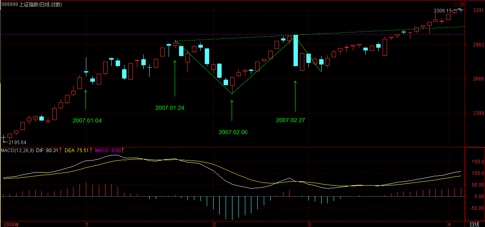
该说的昨天已经说了，今天的走势就如同照抄本ID昨天的剧本一样，如果你连剧本都先看了还操作不好，那就没法子了。
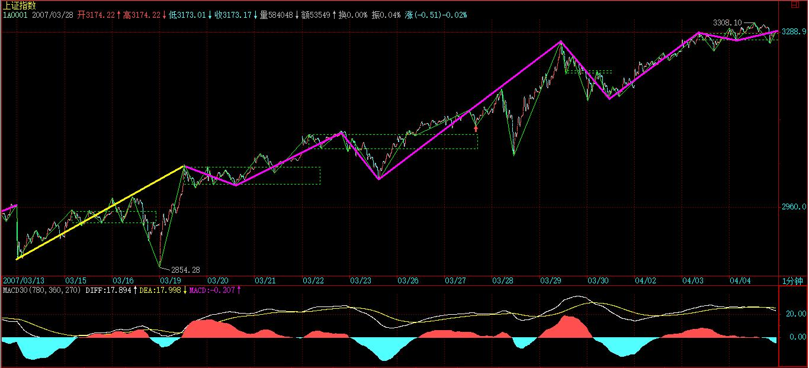
从纯技术上，深圳基本达到目前在9200点附近的上两高点连线，这里存在技术压力很正常。【韶山映山红】这一天的两高点的连线大约在9200点附近。】
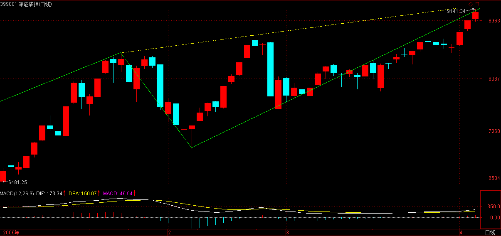
上海最近走不强，原因很简单，就是一时没目标了，深圳还存在那线可以攻击，上海上面无限宽广，但反而找不着北了。
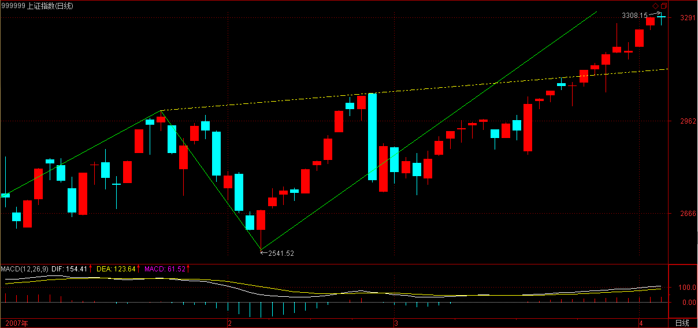
当然，更重要的是，深圳指数更代表优质二线股，最近这板块得到越来越多的认同，所以深圳走强，其实就代表本ID的优质二线股剧本被市场在演绎。
个股不说了，目前这位置，追高，一点必要都没有，只要能保持买卖节奏，问题就不大，震荡是好事，对于节奏好的人，越震荡成本越低，最好天天震，那才好。技术不好的，还是看5日线，如果中线的，看10日线，你看去年8月开始的那一波，10日线基本就没破过，如果真破，那就是级别较大调整了，反之，如果5日线都不破，就不用担心什么。
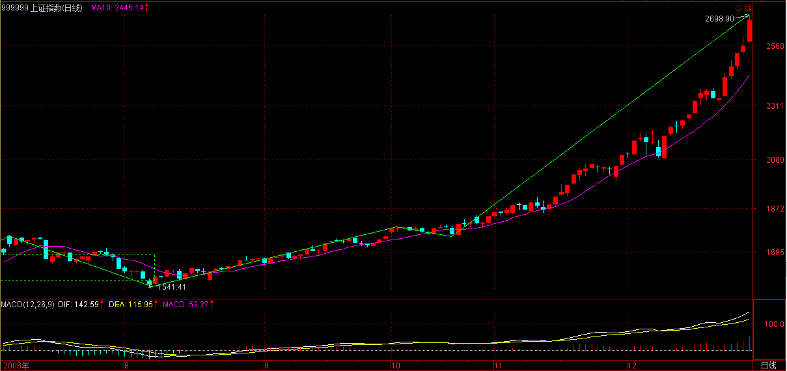
板块轮动，只要不是太垃圾的股票，都会轮到的。
2007-4-4 15:33
对不起，刚才发帖后就一直进不来，说地址不对，可能新浪系统不稳定。
2007-4-4 16:00
[匿名] 水房姑娘 2007-04-04 15:51:52
缠Ｍ，前天你提到管理层迟迟都不推出创业板，媒体又说创业板年内有戏，创业板戏有否？
=＝
中国的事情很难说，太多利益平衡，对于市场利益来说，当然越快越好，总之，有能力的都多推一把，才能快。但不是谁一个人就能办成的。关键是真正懂没有，声音太多，不知道听谁的，所以办成一件事情，都很麻烦。
2007-4-4 16:17
今天的系统很有毛病
2007-4-4 16:17
星星 2007-04-02 21:44:33
只要盘整背驰，就在i+2为偶数时卖出，为奇数时买入。如果没有，当i为偶，若Ai+3不跌破Ai高点，则继续持有到Ai+k+3跌破Ai+k高点后在不创新高或盘整顶背驰的Ai+k+4卖出，其中k为偶数；
1、如果没有盘整背驰，当i为偶，若Ai+3跌破Ai高点，是不是要出掉，是不是一跌破就要出掉？
==
缠中说禅 2007-04-02 21:53:32
除非出现小级别转大级别的a+B`情况，跌破和盘整背驰是一回事情。
－－－－－
[匿名] 缠心雕龙 2007-04-04 15:42:28
博主好！前天这段回复，为何说跌破和盘整背驰是一回事？这里的盘整背驰是指Ai+2和Ai盘背吗？
还有，如果Ai+2和Ai没有盘背（且设Ai+1低点不破Ai-2高点），则Ai+2结束时持有，那Ai+3发生暴跌，一直跌破Ai的低点也没结束，这时肯定已经亏损了，即使后面向上的Ai+4也不一定能解套，这种情况如何应对？
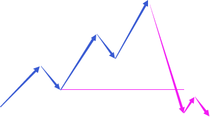
==
盘整背驰如果不演化成a+B`然后继续原方向向上，就肯定要跌破或升破该位置，【韶山映山红】这里说的三段盘整背驰之后有两层规范：1，必破前高、演化成a+B`。2，然后继续原方向向上。 “该位置”是哪个位置？应该就是三段盘整的起始点，也就是Ai的低点。 除非盘整背驰之后的下跌发生了向上的小转大，才有可能不“演化成a+B`就继续原方向向上”，这样也就不存在跌破该位置了。】这和不能突破中枢就一定要回拉中枢是一个道理。【韶山映山红】两种非此即彼的关系，不回拉中枢就会突破，不突破就会拉回。】
其实，盘整背驰后，90%的a+B`基本都会跌破或升破该位置，【韶山映山红】盘整背驰之后，90%的回踩形成中枢都会跌破Ai高点？★可以做个专题。以后研究。】但这没有必然绝对性，和前面那种情况不同。【韶山映山红】“前面那种情况”是什么情况？没有盘整背驰就不跌破前高？★可以做个专题。以后研究。】
2007-4-4 16:21
[匿名] 白玉兰 2007-04-04 16:19:01
妹妹看看我的症候：
777 9元进的，15元买了再也没敢进去，如果能和振荡共舞，我可以小发一下了。【韶山映山红】【韶山映山红】000777中核科技。】
==
第一次大洗盘让MACD日线第一次回拉0轴后一定要买回来，就算是背驰的情况，还有创新高的机会，而且还存在不背驰的情况，那就厉害了。
本ID说过，那14只里，涨1倍是小菜，涨1倍后才稍微洗一次盘，只能证明不止涨1倍。不过，现在就别追了，没有什么股票是值得追的。
2007-4-4 16:27
[匿名] 月儿 2007-04-04 16:24:26
股票涨得太快,管理层可能要开始收税了,这样对庄家各股票自己都是不利的,还是一波波上的好.老师觉得是这样吗
==
国家股是最大的股东，如果他愿意交，本ID没意见。
2007-4-4 16:28
[匿名] 新年好 2007-04-04 15:55:02
现在深圳和上海的大盘走的差别可真大，我是看深圳大盘来操作的。
不过这个背驰的力度总是判断不了，缠姐什么时候能抽空讲讲力度的问题吗？
==
背驰后出现的三种情况，前面有一堂课专门说过，请去查找。【韶山映山红】29课。】
2007-4-4 16:30
[匿名] asdf 2007-04-04 15:55:25
对于构成中枢的三段，不知楼主有什么实际的应用技巧可以帮助我们不用一层一层去判断每一段是否走完，例如判断日线中枢的形成，首先至少要有三段连续的30分钟走势类型完成，而30分钟的每一段又要求是5分钟图表上的三段走完，5分钟的三段又要求至少1分钟图表的三段要走完，如此循环判断，感觉实际应用起来真是不太方便，而是可以只从日线图上或30分钟图上就可以方便的判断出来。
=＝
这个问题说过多次，趋势看背驰，盘整看第三类买卖点。
【韶山映山红】趋势a+A+b+B+c的A中枢有第三类买卖点，盘整a+A+b的A中枢也有第三类买卖点。这两个第三类买卖点的当下，有什么区别？】
【韶山映山红】趋势背驰之后有三种走势。盘整三买卖之后呢？★一样的，扩张、趋势、盘整。不同的是，趋势包括两个方向的。】
2007-4-4 16:31
[匿名] 百思不解 2007-04-04 15:43:33
楼主好，请教关于非同级分解的问题。
同级别分解规则：在某级别中，不定义中枢延伸，允许该级别上的盘整+盘整连接；与此同时，规定该级别以下的所有级别，都允许中枢延伸，不允许盘整+盘整连接；至于该级别以上级别，根本不考虑，因为所有走势都按该级别给分解了。
按同级分解的话，如果本级不定义中枢延伸，那本级趋势的中枢就都不允许延伸了，这样很多本级趋势岂不都不成立了？都被分解了？
即使本级按同级分解，但次级以下还允许中枢延伸，即次级以下还要实行非同级分解，这样非同级分解在实践中无论如何都绕不过去，还请楼主指教非同级分解的原则。
我理解的非同级分解，似乎是16课中的连接模式，只不过“上涨＋盘整“中，上涨的级别可能比盘整底不止一级吧？非同级分解原则还应该有很多细节的，也是实践中模糊的地方，影响对走势的解读。
==
一个30分钟的趋势，如果有N个30分钟的不延伸的中枢，根本不存在被分解的问题，只会被30分钟的同级别分解看成一个趋势。
如果其中有一个中枢延伸出6段，那就自然被分解成两个30分钟的盘整，这没什么可难理解的。【韶山映山红】9段升级的中枢，是分解成三个，还是两个？★以后研究。】
2007-4-4 16:34
[匿名] abc 2007-04-04 16:33:10
请教LZ，如果开征股票所得税会让牛市结束吗？
==
按这种逻辑，外国就不会有牛市？
现在要让牛市结束，除非重新跌破1000点，否则都不过是大牛市中的调整。
2007-4-4 16:36
[匿名] 袖手旁观 2007-04-04 15:44:37
昨天论语前半部分的直译，问答之间存在脱节，缠mm怎么看？
==
没有什么脱节，如果这都叫脱节，那禅宗的语录就没法读了。
【韶山映山红】
子贡问曰：“有一言而可以终身行之者乎？”子曰：“其恕乎？己所不欲，勿施於人。”
子贡问：“有可以终身一而贯之的言论吗？”孔子说：“自己不想要的就不施加给别人，难道就是“恕”吗？”】
2007-4-4 16:38
[匿名] 新年好 2007-04-04 16:04:40
今天深圳指数在04.04 11:04和04.04 13:51都有背驰的样子，但是前者没怎么回调就直接上去了，但是后者却回调那么多，请问缠姐这个该如何判断啊？？
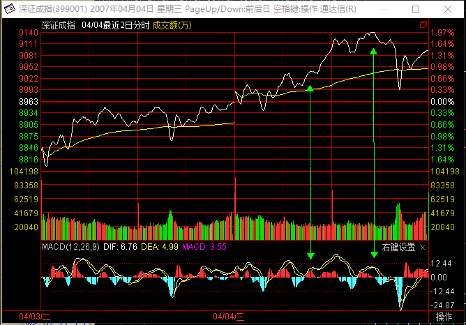
我在第一个背驰的时候参与了一下，谁知道差价肯本没多少，到了第二次我就没参与，谁知道又回调了那么多。真是痛苦啊。
==
不用看复杂的东西，就像今天深圳，请看看1分钟图的MACD，你看看你说的两个点之间有什么大的区别？【韶山映山红】中枢，离开段，形成线段类上涨趋势，背驰，更大级别盘整。前一个点是三买后向上的次次级别盘背。后一个点是离开段的线段类上涨趋势背驰。★以后研究。】
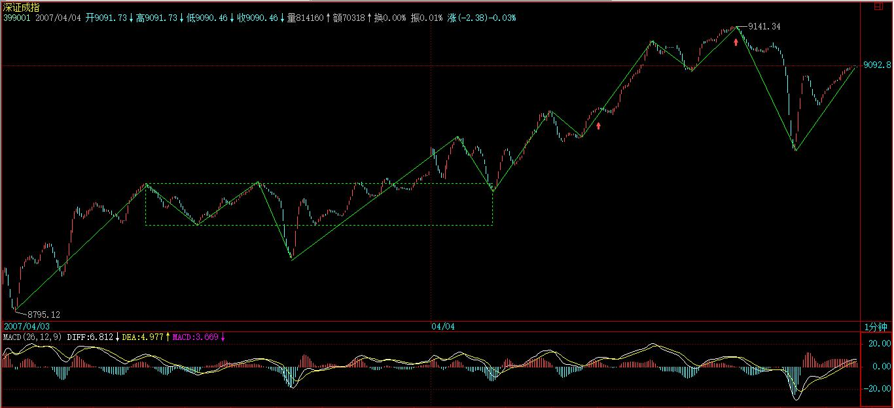
2007-4-4 16:41
[匿名] 新年好 2007-04-04 15:59:27
象938在5分钟图上03.30 09:35就背驰了，但是一直没怎么动静，今天突然拉起来，恐怕很多人早就拿不住跑了。 【韶山映山红】000938紫光股份。】

-----------
[匿名] 新浪网友 2007-04-04 16:05:26
不要老是看5分钟的好不好
LZ的理论好是好，就是有的时候不灵 所以我们也要辩证的看她的理论
==
本ID理论不灵的时候早说过了，就是只有一个人交易的市场。除此之外，没有什么不灵的。
2007-4-4 16:43
[匿名] 白玉兰 2007-04-04 16:12:10
妹妹好！
我的山东人有小有表现。
问妹妹云铜咋样，和期货联动大吗？
【韶山映山红】000878云南铜业。】
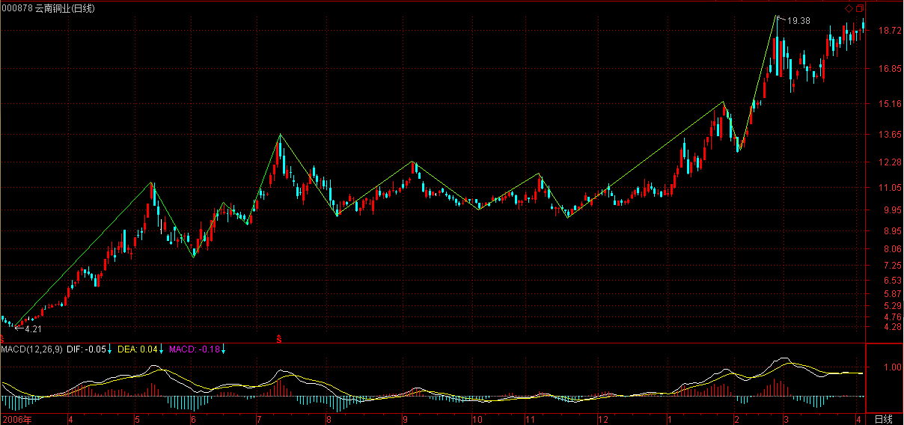
==
云铜中线没什么大问题，现在只是在历史天价区洗盘。
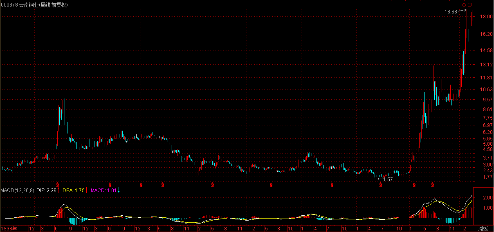
看看这次行情最终突破历史天价的股票相应的走势就明白。
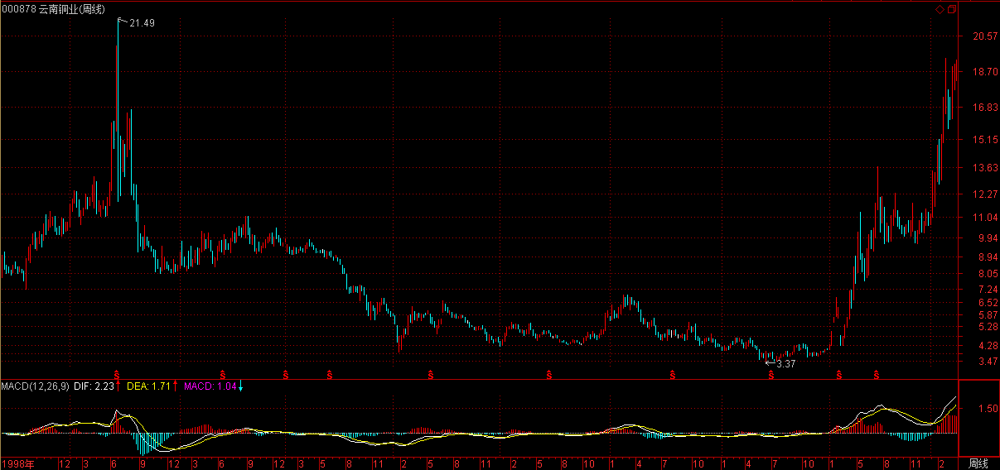
2007-4-4 16:46
[匿名] 漂泊 2007-04-04 16:06:09
禅主，问一个不好意思问的问题，三段重叠，怎么看啊？
==
1到5；5到2；2到7，你说重叠在哪里？
2007-4-4 16:48
[匿名] 缠迷 2007-04-04 16:33:10
缠妹妹，600649也是14只票里的，现在看就它走的最慢，但是我一直握在手里，让它磨练偶的耐性，但是也快坚持不住了。呵呵 【韶山映山红】600649原水股份，2008-05-12变更为城投控股。】
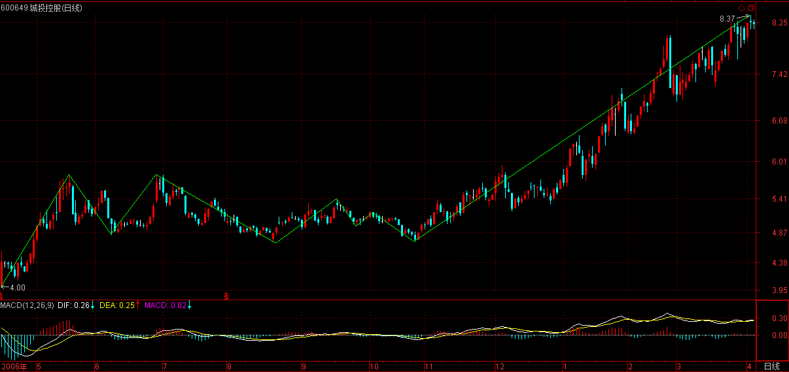
==
你要看看他现在什么地方，打开周线图，看看他的左边，这是历史密集区。
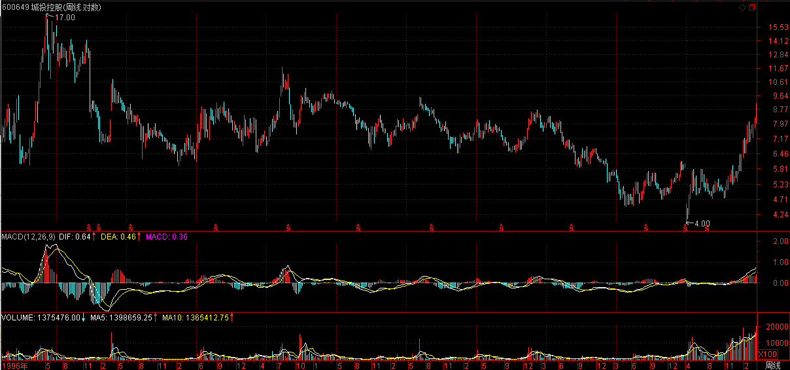
2007-4-4 16:50
[匿名] 白玉兰 2007-04-04 16:19:01
妹妹看看我的症候：
777 9元进的，15元买了再也没敢进去，如果能和振荡共舞，我可以小发一下了。
＋＋＋＋＋
[匿名] 白玉兰 2007-04-04 16:23:11
上面错了，是15元卖的。
但是，山东人操作得还好，因为我卖掉了大部分，留了一些。成本是－23元。
可是，套现的钱却不知该买还是观望？
＋＋＋＋＋＋
[匿名] 白玉兰 2007-04-04 16:41:43
妹妹如果不回答，我就认为是默认暂时观望了。。
==
套现股票到成本为0就足以，特别还有中线潜力。
这是一个习惯好坏的问题。例如777，基本翻番后就抛一半，剩下就扔一边不管，就算你不会弄短差把筹码变多，就这一招，就可以在大牛市中用最小风险获得最大利益。
【韶山映山红】000777中核科技。】
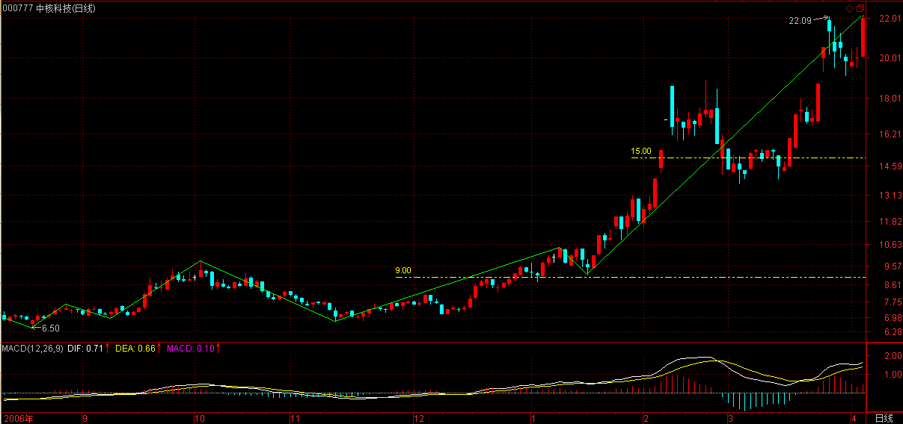
2007-4-4 16:55
[匿名] 大猪 2007-04-04 16:40:43
缠主，您好！
怎样判断大级别能量耗尽没耗尽呀？我现在实际操作中出现按小级别判断出现背弛，卖出了，之后调整几下又上去了．差价都没做出来？可能是操作级别太低了是一个原因，但主要还是不会判断大级别能量耗尽没耗尽，请帮忙接惑，谢谢！
==
技术不好的，就看30分钟级别进出，5日线都不破，就别乱折腾。【韶山映山红】小级别走势，结构分力的影响力偏小，背驰判断的价值也跟着打折扣。放大级别可以缓解这个问题。 5日线，是结构分析的参考，也是能量分析的参考。】
差价没地都是，关键是你技术达到没有，如果没达到，那只会把自己搞乱。先学会站起来，再跑。
【韶山映山红】怎样判断大级别能量耗尽没耗尽呀？缠师没有正面回答。因为，这是个一言难尽的问题。一个趋势背驰结束，如果能量耗尽，就应该有一个反向趋势的转折，否则，就还需要盘整去消耗能量。盘整还不足以消耗完，就会继续原方向的走势。】
2007-4-4 16:58
[匿名] 新浪网友 2007-04-04 16:55:36
老大讲讲343吧,咋的啦
==
343没什么问题，唯一的问题一个多月前就说过，某汉奸基金拿得太多，不招本ID待见。【韶山映山红】600343航天动力。】
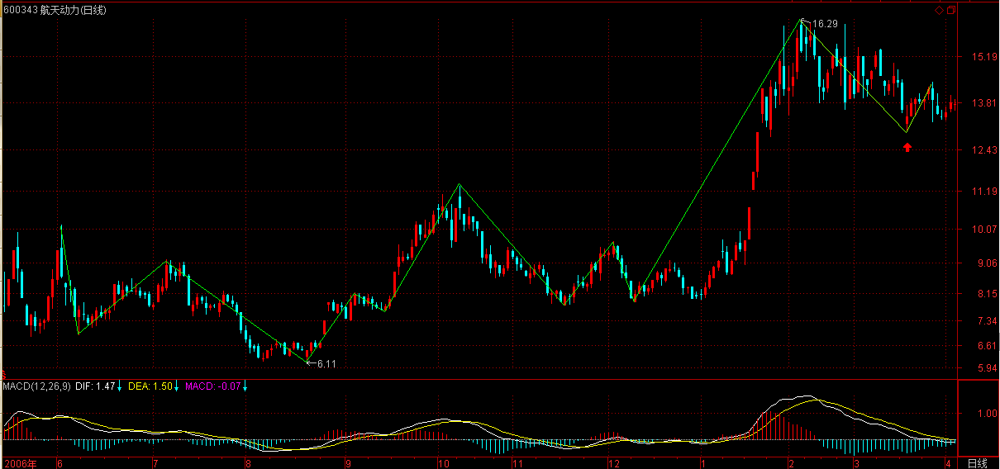
2007-4-4 17:00
[匿名] 缠迷 2007-04-04 16:33:10
缠妹妹，600649也是14只票里的，现在看就它走的最慢，但是我一直握在手里，让它磨练偶的耐性，但是也快坚持不住了。呵呵
==
缠中说禅 2007-04-04 16:50:58
你要看看他现在什么地方，打开周线图，看看他的左边，这是历史密集区。
--------
[匿名] 新年好 2007-04-04 16:59:49
缠姐说的历史密集区是什么意思啊？又有什么影响啊？
==
就是历史上大多数的人都套在这个地方，股票又不是慈善晚会，那些没信心、没耐心的人不下来，换手不充分，怎么可能大涨？
【韶山映山红】600649原水股份，2008-05-12变更为城投控股。】

2007-4-4 17:03
[匿名] 清 2007-04-04 17:02:08
很久没有提出问题了。。静静理解。。
1到5；5到2；2到7，你说重叠在哪里？
这个我知道就是。。。呵呵
但我想问1到5，跳空4到2，2到7，那么重叠在哪里？
还有一个问题。对于像600682，不利消息出来后就无量跌停，若第一次打开跌停后，一般如何操作？
==
跳空就是最低级别的走势，和不跳空的情况一样。【韶山映山红】过程中的小跳空不用管。笔线段初始化以后，一切都纳入了。】
2007-4-4 17:04
[匿名] 酒红的心 2007-04-04 16:56:21
老大，从中国传统文化的角度分析，转基因食品会不会给人造成严重的伤害？
==
如果你把人当成某种基因决定的东西，那当然有影响，那人是那样吗？问题不是基因如何如何，而是先认清人本身。你是谁。
2007-4-4 17:18
[匿名] 走失的爱犬 2007-04-04 17:18:36
缠姐。你说紫光股份的不利消息有没有出来啊？今天可涨停了啊。我还一直在等呢？ 【韶山映山红】000938紫光股份。】
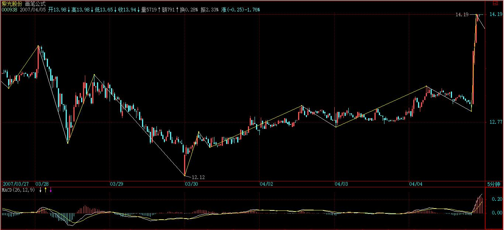
==
知道什么是最大的不利吗？就是清华不是清华，除了这个，其他的所谓不利算得了什么？
2007-4-4 17:21
[匿名] 大猪 2007-04-04 17:19:36
谢谢缠主！！
还有一个问题：如何选择分析的中枢．假定一个５分钟级别的图形上，走势突破原来的中枢，形成了一段新的走势，其中形成了一个新的＂中枢＂，但围绕此新＂中枢＂的波动，有与之前中枢重叠的地方或者两个中枢有重叠的地方，该怎么选择要分析的中枢？
谢谢！
==
那就要扩展成更大的中枢，如果是趋势中的同级别中枢，之间是不会有任何重叠的。这在中枢扩展、延伸等课程里都有。
2007-4-4 17:24
[匿名] 袖手旁观 2007-04-04 15:44:37
昨天论语前半部分的直译，问答之间存在脱节，缠mm怎么看？
==
缠中说禅 2007-04-04 16:38:20
没有什么脱节，如果这都叫脱节，那禅宗的语录就没法读了。
—————
[匿名] 袖手旁观 2007-04-04 17:21:58
其实中唐以前的禅宗语录，甚少机缘语句，多是正面解说禅理。
再者即便是后世的语录，讲究“以心印心”，也多类似比兴之类，自然是可读的。
直译论语带上禅机也不大合适啊，文言比白话禅。
但是正文的阐述是很有启发的，没什么意见。
==
佛法平沉
2007-4-4 17:34
[匿名] 禅迷 2007-04-04 17:27:33
老师，以前您曾提到沪深指数背离，大盘一般要调整了，以往几次通常是沪市指数涨幅超过深市，那象今天这种情况深市比沪市走强这么多，大盘可能会怎样呢？
期盼老师指教，谢谢.
==
原因不是已经说了，深圳成分指数代表的是优质二线股，上海指数只是超级大盘股的指数，深圳也没比上海强，连上次两高点连线都没破，上海早破了。
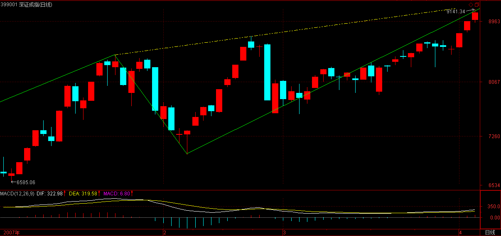
上海不跟着走，所以就有了今天的震荡，如果还不跟，那就继续震荡，震到跟为止。
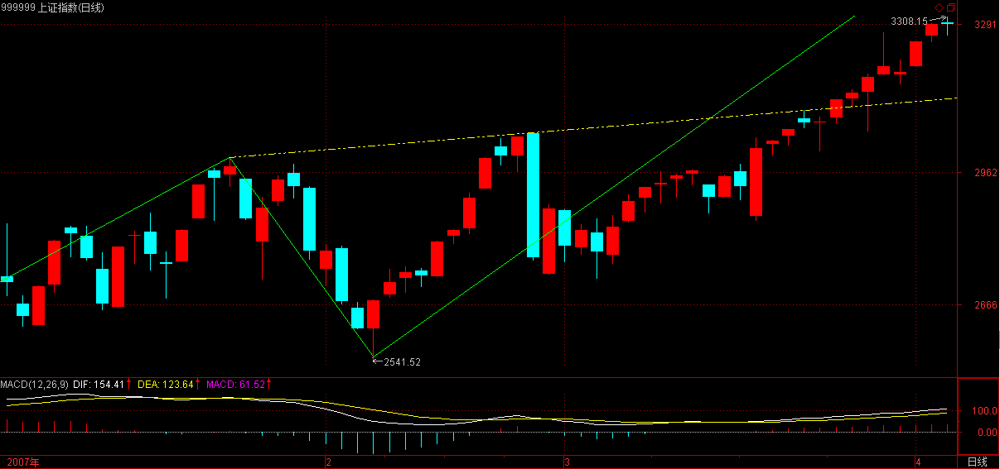
2007-4-4 17:37
[匿名] 瞎鼓捣 2007-04-04 17:34:31
老大今天没饭局啊？？
==
想想这两天是什么日子？
2007-4-4 17:41
好了，快6点了，家里还有事情，先下，再见。
2007-4-4 17:43
(2007-04-05 15:33:21)
子曰：“赐也，女以予为多学而识之者与？”对曰：“然，非与？”曰：“非也！予一以贯之。”
杨伯峻：孔子道：“赐！你以为我是多多地学习又能够记得住的吗？”子贡答道：“对呀，难道不是这样吗？”孔子道：“不是的，我有一个基本观念来贯串它。”
钱穆：先生说：“赐呀！你以为我是多学了而一一记在心的吗？”子贡对道：“是呀。（随又说）不是吗？”先生说：“不是的。我是在此多学中有个一来贯通着的。”
李泽厚：孔子说：“子贡，你以为我是多学多记的人吗？”子贡回答说：“对。不是这样吗？”孔子说：“不对。我是用一个基本看法来贯串它们。”
详解：
本章字面意思很简单，但所有的解释，都把孔子的“一以贯之”当成用一种思想、一种观念、一种看法、一种逻辑、一个上帝、一种主义为基础的子贡类的“一而贯之”。
当然，这种观念很常识，人，从最原始的对自然神秘的崇拜，把自然、天、神秘力量当“一”，到巫教类的，把人与自然、上帝、天之间某种灵魂类的沟通、神秘的感应为“一”，再到所谓的理、道、梵、绝对精神、自然规律、科学知识、资本力量、拜物教等等为“一”，人如浮萍，总要寻“一”为依靠，甚至要弄一个所谓的“人”出来，人道主义一番，其实都如喝鹿趁阳焰，自渎闹剧一场。
“一以贯之”，可一者，必是“不患”者，对于现实中的人，最基础的、最前提性的、最可“一”的，就是当下的现实本身，一切离开当下现实的，都非一。
如前所说，《论语》的关键在承担，承担什么？就是承担这当下的现实，必须首先承担这当下的现实，才可能有改造、超越。
“闻见学行”“圣人之道”，就是“一以贯之”的另一种说法，直下承担，才可能“闻见学行”“圣人之道”，才可能“一以贯之”，否则就只能继续制造些名言的垃圾来延续自欺欺人的把戏。
“之”，没有具体所指，可以泛指一切当下现实中一切的东西，可以是具体现象，也可以是某种抽象理论，可以包括现实人生中一切可以被“识”的东西。多学并不能识之，如果不能当下承担，所谓的多学，不过是名言游戏。孔子所认为的“学”，都是以对现实的直下承担为前提的，也就是以“一以贯之”为前提的。
缠中说禅白话直译
子曰：“赐也，女以予为多学而识之者与？”对曰：“然，非与？”曰：“非也！予一以贯之。”
孔子问：“子贡啊，你把我当成不断学习从而了解现实当下的人吗？”子贡回答：“对，不是这样吗？”孔子说：“不是啊，我只是直下承担当下现实而贯通它。”
子曰：“参乎！吾道一以贯之。”曾子曰：“唯。”子出。门人问曰：“何谓也？”曾子曰：“夫子之道，忠恕而已矣。”
杨伯峻：孔子说：“参呀！我的学说贯穿着一个基本观念。”曾子说：“是。”孔子走出去以后，别的学生便问曾子道：“这是什么意思？”曾子道：“他老人家的学说，只是忠和恕罢了。”
钱穆：先生说：“我平日所讲的道，都可把一个头绪来贯串着。”曾子应道：“唯。”先生出去了，在座同学问道：“这是什么意思呀？”曾子说：“先生之道，只忠恕二字便完了。”
李泽厚：孔子说：“曾参呀，我的思想行为是贯通一致的。”曾子说：“是。”孔子走出后，其他学生问：“什么意思？”曾子说：“老师所讲求的，不过是忠和恕罢了。”
详解：
关于孔子的“一以贯之”，两千多年来争论不休。
最常见的，就是先假设一所谓“仁”道，人人本于心，从而因我心而贯通万人之心，进而万世人之心。这假设的荒谬性，根本不值得反驳。
如果这假设成立，那么，集中营里的犹太人在被扒皮拆骨时一定感应到希特勒一人的快感、仁慈，从而被扒皮拆骨还高潮不断；南京大屠杀的时候，无论杀者、被杀者还是观看者、评论者都一起快感不断，所以万世以后汉奸都可以长盛不衰了。
这里，千万别用谁谁谁不是人的逻辑来搪塞，老话说的好，“一种米养百样人”，都是人，只是在“人不知”社会的当下现实中，这人和人不是一样的人。
这不是什么上帝、先验的逻辑，而是当下现实的现实逻辑所决定的，在这点上，孔子和马克思是一致的。
但孔子的学生们，总是自作聪明，本章的主角曾参，孔子死时才29岁，来了一句“夫子之道，忠恕而已矣”，为祸神州2000多年。
本章字面意思很简单，但其中情节，却与下面神会的故事类似。
曾参是孔子的关门弟子，神会也可以算是惠能的关门弟子，但这两个关门弟子，其实都没入门。
一天惠能问：“吾有一物，无头无尾，无名无字，无背无面，诸人还识否？”
这就如同孔子说“参乎！吾道一以贯之”，这里也同样有一个潜台词“还识否？”
神会就抢着回答惠能：“是诸佛之本源，神会之佛性。”这就如同曾参说“夫子之道，忠恕而已矣。”
孔子后面说什么，《论语》里没记载，但在《六祖坛经》里，惠能对神会的回答有如下回应：“向汝道无名无字，汝便唤作本源佛性，汝向去有把茆盖头，也只成个知解宗徒！”【韶山映山红】给你讲了没名没字嘛，你为什么还把它叫作本源佛性呢？你将来要是有一把茆盖头，茆是茅草。这个意思就是讲，将来你自己要是有一个小茅蓬，住着可以遮避风雨，这个意思就是说，你将来如果是能够自立在一方教学的话，你也只是一个知解宗徒而已呀。】
这回应完全可以同样给曾参：“向汝道吾道一以贯之，汝便唤作夫子之道忠恕而已矣，汝向去有把茆盖头，也只成个知解宗徒！”
曾参，也就是一知解宗徒，神会和曾参这两个知解宗徒，在历史上却有相同的一点，就是都成了把本门“发扬广大”的人，神会扫荡北宗使得惠能的南宗一脉大显，而曾参，后来成了曾子，成了孔子门人里实际上影响最大的一个。
曾参比神会为祸更深的是，当时禅宗大德辈出，神会这门都没找着的一脉很快就断灭了，而孔子门下，真得孔子之髓的颜回比孔子还早死，后继无人，结果就给曾参这知解宗徒搞出大名堂，2000年来对中国有着最大影响的儒家，其实就是曾家一脉，其门派出了子思，再下传孟子，四书中，除了《论语》，另外《大学》、《中庸》、《孟子》，三本都出自曾参门下，由此就知道，中国这两千多年的正统儒家究竟都是些什么货色了。
缠中说禅白话直译
子曰：“参乎！吾道一以贯之。”曾子曰：“唯。”子出。门人问曰：“何谓也？”曾子曰：“夫子之道，忠恕而已矣。”
孔子说：“曾参啊！我“闻见学行”圣人之道一以贯之。”曾参说：“是。”孔子出去。孔子的其他弟子问：““一以贯之”是什么意思？”曾参回答：“老师的道理，只是“尽已之心以待人，推己之心以及人”罢了。”
（待续）
今天继续10元上下二线股行情，看看今天涨停股票有多大比例落在该区间就清楚了。尾盘一线大盘的偷袭，其实也不算太大问题，现在这种走势，对某些人确实够煎熬的。
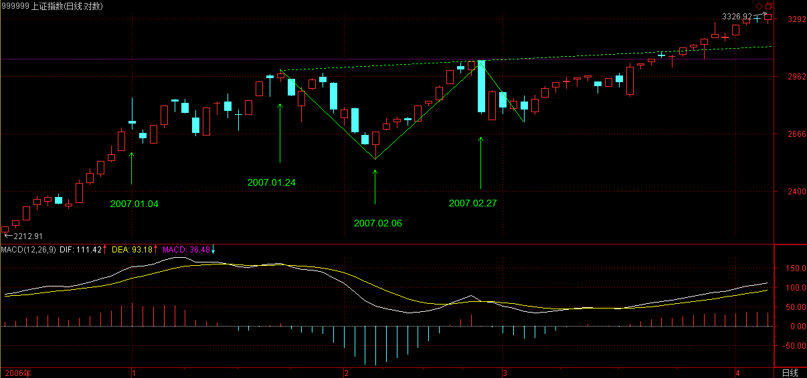
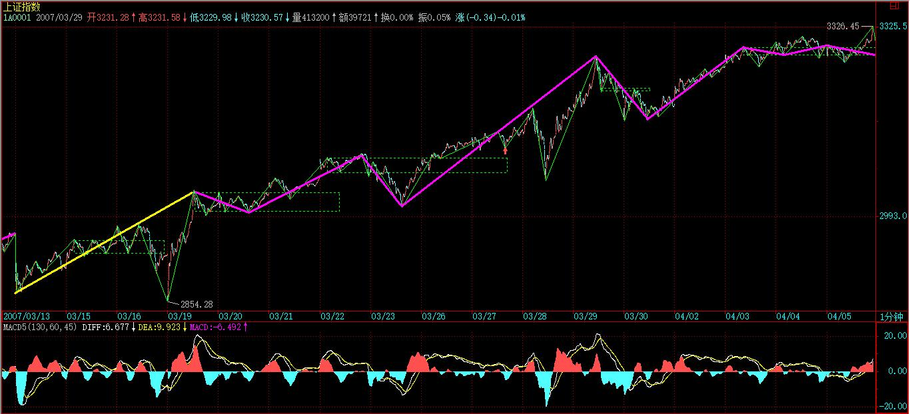
深圳由于已经离那条压力线很近，所以今天走的已经有点沉重，如果真能突破站稳该线，那深成指的1万点，就在多方炮火下了。所以对于这条线，汉奸是不会轻易罢休投降的。1万点，其实不算什么，以后上海的指数也会有这一天，只是内地指数从来没有这样的位置，让散户、管理层接受，还需要一定的前戏。
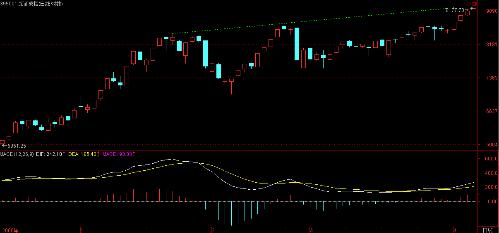
目前管理层的心态也很微妙，而且中国的事情，经常搞平衡，汉奸现在也在到处哭诉，是否能打动某些地方，这种事情就不好说了。所以，太过乐观的情绪是要不得的，目前最好的策略还是以稳为住，这不仅是对多方的正规军，对民兵、敌后武工队等等，也是一样的。
板块轮动，稳健地走，通过不同级别的震荡消除各种压力的，才是正路。像某些股票瞎搞乱来，这只会对汉奸有利。
2007-4-5 15:34
缠中说禅
明天汉奸可能会不高兴,毕竟这个星期什么都没干出来,老是涨也太没有意思了,本ID真是有点对他们失望,再这样下去,本ID都不想玩了.
目前市场的关注很明显,就是本ID反复说过的二线,蓝筹,三线题材股.在买点买,在卖点卖,实在不行的,就看5日线,只要不破的,都是可以搞的.
具体的各股没什么好说的,按图操作就是了.好了,本ID又要驱那街道了,先下,再见.
2007-4-5 15:36
[匿名] 大鱼小鱼落鱼盘 2007-04-05 15:39:48
今天看到 路桥建设 涨停。后悔没买啊，买了歌华有线，正是涨跌有限啊。缠主，目前就是10元行情啊。像歌华这样的高价股就没戏唱了吗？
==
轮动，都会有的。
2007-4-5 15:44
[匿名] 缠心雕龙 2007-04-05 15:36:54
博主好！顶一个
如果Ai+2和Ai没有盘背（且设Ai+1低点不破Ai-2高点），则Ai+2结束时持有，那Ai+3发生暴跌，一直跌破Ai的低点也没结束，这时肯定已经亏损了，即使后面向上的Ai+4也不一定能解套，这种情况如何应对？
==
不背驰且不演化出a`+B形式，就不会跌破，【韶山映山红】盘整背驰，或者小转大演化出a`+B形式，都有跌破的问题。最根本的解决之道还是要解决小转大的判断和操作问题。】除非出现百年不遇的，像突然世界大战，美国突然又被撞了几百座楼之类的事情，使得本ID理论那两个前提在短时间内失效。
2007-4-5 15:49
缠中说禅
[匿名] 笨笨 2007-04-05 15:48:50
姐姐好,938昨天涨停今天为什么走成这样呢,昨天真没发现卖点啊
【韶山映山红】000938紫光股份。】
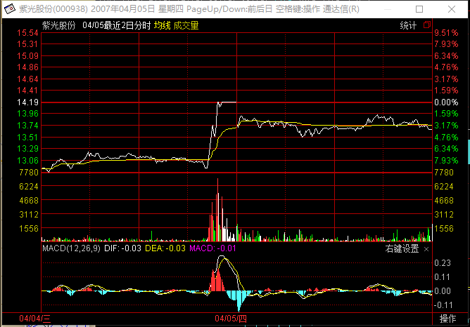
==
谁告诉你每天都有买卖点的
2007-4-5 15:51
[匿名] 缠心雕龙 2007-04-05 15:39:36
对于39课的同级操作流程，判断每段Ai是否结束是个很大问题。假如每段Ai的结束你都能正确判断，干脆就每段Ai都高买低卖得了，这是最高效的操作了，何必比较Ai与Ai+2呢？这里是不是还有相邻两段Ai内部的分解组合问题？
==
你没理解同级别，先把级别搞清楚。【韶山映山红】比较Ai与Ai+2的盘整背驰，操作级别是高一级的，而不是Ai所在级别。】
想操作效率高，就用更小级别，但这是有限度的。
2007-4-5 15:51
[匿名] 新浪网友 2007-04-05 15:41:07
夏斌还是有点眼光的,看到了些问题,能提出处理战略策略和战术步骤,呵呵。时间不多了啊。
原来楼主也不解“一”为何意啊？晕~。
==
文章里有，请看清楚。
2007-4-5 15:53
[匿名] 后知后觉 2007-04-05 15:52:53
感谢禅主教诲。最近节奏感很好，小有收获。
主力的动作节奏和时间总有变化的，不过就那么几个时间段。
最近在调查违规，还关闭了北京证券，挺替他们惋惜的。说来可笑，N年前在华联商场碰到了 吕立新，他在陪老婆逛商场，弟子我厚颜无耻的上去搭讪，他为人也算中肯，陪弟子聊过股票。后来看到他做了北京证券公司的头目。不知道现在是否还是他掌门？如果禅主认识他，方便的时候，代我问候他。就说N年前在华联商场偶遇，他给推荐“宝商集团”和“西藏矿业”的朋友问候他，祝他顺心如意！
扯的远了。最近越看0021XX的系列股票越感觉有戏，退守皆宜，也这样在群里说了，不知道禅主怎么看？好久没留言了，但是禅主的文章和回复一直在学！感谢！
==
中小板袖珍股，继续按剧本演绎，中线当然没问题。
2007-4-5 15:57
[匿名] hehe2 2007-04-05 15:56:06
BLOG 主, 是否可以再指点一下关于盘整是怎么结束的啊?
=
第三类买卖点。
2007-4-5 15:58
[匿名] 缠心雕龙 2007-04-05 15:36:54
博主好！顶一个
如果Ai+2和Ai没有盘背（且设Ai+1低点不破Ai-2高点），则Ai+2结束时持有，那Ai+3发生暴跌，一直跌破Ai的低点也没结束，这时肯定已经亏损了，即使后面向上的Ai+4也不一定能解套，这种情况如何应对？
==
缠中说禅 2007-04-05 15:49:07
不背驰且不演化出a`+B形式，就不会跌破，除非出现百年不遇的，像突然世界大战，美国突然又被撞了几百座楼之类的事情，使得本ID理论那两个前提在短时间内失效。
－－－－
[匿名] 缠心雕龙 2007-04-05 15:55:31
原来如此。看来那两个前提，也会受突发事件影响啊。比如伊朗扣留人质，油价开盘突然涨停，没有前兆啊。
==
这个自然，像今天晚上突然开会说要把股市关了，那什么技术都没用。技术只能在系统中有用，那些非系统性风险，也就是说对所有人都是突发的事情，当然不是技术能解决的，否则，技术就可以预测上帝今天吃什么了。
2007-4-5 16:01
[匿名] 夜雨 2007-04-05 16:00:50
美女姐姐好，前几天，指数涨，我的股都没有什么涨，牢记老师的话，顶住了，今天市值创了新高，很有成就感，06年下半年入市，06年没赚钱，还亏损了，在这里学习了之后，07年至今天盈利70%，谢谢您。
==
继续努力，关键是最好的胜利成果都保存下来，否则整天坐电梯也没意思。
2007-4-5 16:02
[匿名] 中枢 2007-04-05 15:54:00
缠心雕龙: 老师刚刚明确了不盘背必然不跌破. 现在问题是盘背了,是否仍然区分两种情况, 破与不破, 但我想不通这两种结果对后面操作有什么影响
－－－－－－－－－－－
[匿名] 缠心雕龙 2007-04-05 16:01:39
盘背了好办，看前低是否破前高，破就卖，不破就拿着，后面以此类推
===
概念混乱，背驰了才有破，而不是破了才背驰。
2007-4-5 16:04
[匿名] 中枢 2007-04-05 16:03:14
继续请教老师: 盘背后,是否Ai+3跌破Ai高点,对本级别同级别操作没影响,但跌破后可以让我们换挡到高一级别操作?
===
那为什么不先出来再说？【韶山映山红】盘背了就先出来。】
换档是在有足够利润或当下走势出现明显换档迹象所采取的方式，而不是去掩盖判断失误的借口。
2007-4-5 16:07
[匿名] mmhh 2007-04-05 16:05:39
缠MM好！
从心底里感激你！我只会用MM的底背驰就买，顶背驰就卖的原则，也就是MM的买点买，卖点卖的最实用的操作方法。近两个多月来屡试屡赢，做了十几只股票的短线，只只赢利。我始终严重记住MM的教诲，从不追高！死死遵守MM的买卖原则，不断总结经验，不断提高买卖点的精度，争取早日摆脱金钱对我的压力。再次感谢缠MM！祝缠MM精神永远年轻！精神永远快乐！
=
功夫是自己的，本ID只能提个醒，最终解决问题还是靠自己。
2007-4-5 16:08
[匿名] 在路上 2007-04-05 16:01:13
请教缠姐：如果本轮牛市如缠姐所言般走20年，是否绝大多数个股都会创出它本身 的新高来。。
问这个问题是从月线上关注缠姐的股票想到的，好像可以看出未来的幅度问题。
==
这个自然，如果业绩太差创不了，就重组了再来创。
2007-4-5 16:10
[匿名] 中枢 2007-04-05 15:41:22
上节中的“Ai与Ai+2之间盘整背驰”，将演化出“当i为偶Ai+3跌破Ai高点”或“i为奇数Ai+3升破Ai低点”；因而相应演化出高一级别的中枢，例如在该例子里，Ai+1、Ai+2、Ai+3就是30分钟的中枢，而所有更大的中枢，当然是先有高一级别才可能有，否则连30分钟的中枢都没有，哪里来日、周、月的？但这个现象就保证了，在同级别分解下，一个小级别的操作是可以按一个自动模式换档成一个高级别的操作。
------
我觉得袖手旁观是对的．盘背就是跌破
-----
[匿名] 缠心雕龙 2007-04-05 15:49:15
盘背后就一定演化成跌破？可能性很大，但不绝对吧，否则也没有3类买点的概念了。
另外，跌破前一定盘背？这更不绝对了吧。
请博主解惑。
==
盘整背驰一定跌破，而跌破不一定都是盘整背驰，a`+B这种形式也可以。【韶山映山红】盘整背驰必然导致Ai+3跌破升破Ai，小转大十有八九会导致Ai+3跌破升破Ai。】
2007-4-5 16:14
[匿名] 你的样子 2007-04-05 15:49:17
老大，我想问，如果没有基本面什么的别的系统，就靠老大的技术系统，能做到下单如有神么？
还有那个level2有没有用呢？值不值花钱买？
==
一个系统有用，为什么要卖？一个靠卖东西的值得买吗？
如果你明白市场的走势，最简单的，有最基本走势图的系统就足够。
2007-4-5 16:18
[匿名] 中枢 2007-04-05 16:17:55
老师, 前面你对缠心雕龙的回答是不是就是说Ai+2/Ai盘背等价于下面Ai+3跌破MAX(Ai)? (无土法情况) 这样我这个问题就没了.
能否答复一下前面的问题? 关于中枢结束点具体位置,
==
不是等价，而是背驰就一定破，而破不一定就是因为这级别的背驰导致的，而是由于小级别的背驰引发a`+B，这个问题在背驰的三种结果那节课里说得很清楚。【韶山映山红】小转大对小级别来说，就是正常背驰，所以符合29课的三种分类。】
2007-4-5 16:19
[匿名] 后知后觉 2007-04-05 16:18:12
如你文章回复所述，现在的确是个除了您这样的人或集体，大家都整体洗脑的时间段。
各种力量在表演，在让领导层观摩，看领导的眼色，在给领导灌输一些景象；
机构在给我们散户洗脑，告诉我们怎么下去的就怎么上来，没啥好怕的，于是，后续的新股民和资金源源不断。
散户也在给散户洗脑，互相抱团取暖。。。。。。
只有在你这里才能认识市场，了解当下。
有一点不解，现在力量的权衡还是不懂，权重上，大盘就上，就会招来非议。但是，权重股也不会一直趴着，都是为利益来的。为股指期货，他们或许在等机会。这样下去
是否会把他们弄急了，报复性的爆发？什么时候、什么环境下能达到一个平衡，形成共振？ 我问题比较愚蠢。
谢了！
==
没有说大盘股就不涨，只是大盘股启动消耗太多能量，【韶山映山红】这里说的能量，是整个市场做多的能量。】而且还需要一个好的理由，例如如果期货开了，要把空头打暴，那把中行夹上20又有什么大不了的。
2007-4-5 16:24
[匿名] 夜雨 2007-04-05 16:20:24
谢谢姐姐回答我的话，我全仓二线股，不同行业，做一个自己的投资组合，这几支都是盘整一段时间的，有姐姐的股，也有自己选的股，现在虽然比较慢一点，感觉比较安全，但会慢慢走出来，在等待过程中，看他们从慢走到慢跑到加速短跑，这种感觉应该很好
==
对市场有感觉就好。
2007-4-5 16:26
[匿名] 新浪网友 2007-04-05 16:26:12
[匿名] 新浪网友 2007-04-05 15:58:51
老师,刚才出现了一个假冒伪劣的缠师,怎么处置一下?
==
本ID这里来去自由，干什么都可以，只要新浪不干涉。
如果你连假的都分不清楚，又怎么能分得清市场的幻像？
2007-4-5 16:28
对不起，4点半了，今天特殊的日子，还有事情处理，先下，明天见。
2007-4-5 16:31
本课目录
教你炒股票42：有些人是不适合参与市场的《论语》详解：给所有曲解孔子的人（62）子曰：“赐也，女以予为多学而识之者与？”对曰：“然，非与？”曰：“非也！予一以贯之。”子曰：“参乎！吾道一以贯之。”曾子曰：“唯。”子出。门人问曰：“何谓也？”曾子曰：“夫子之道，忠恕而已矣。”